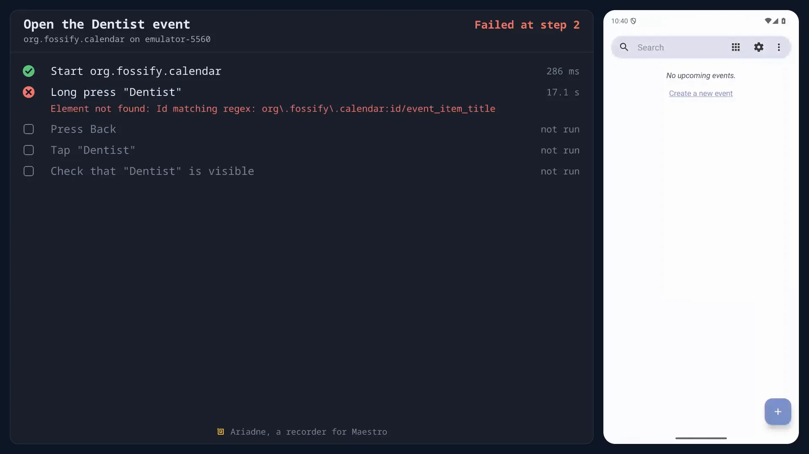
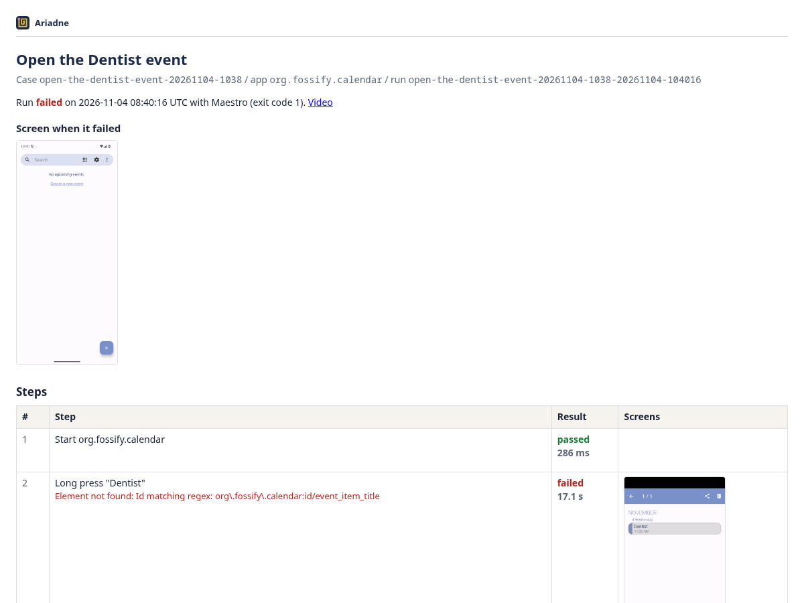
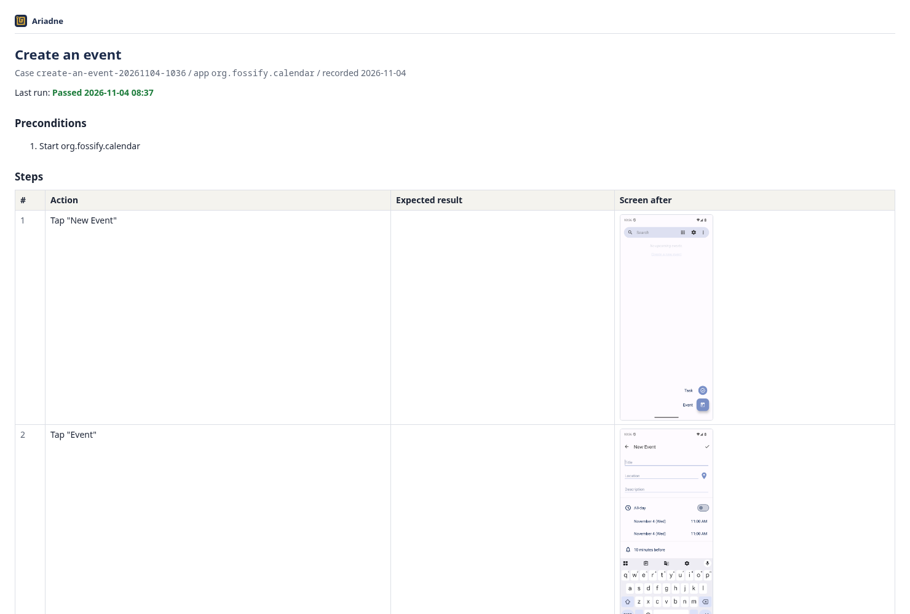
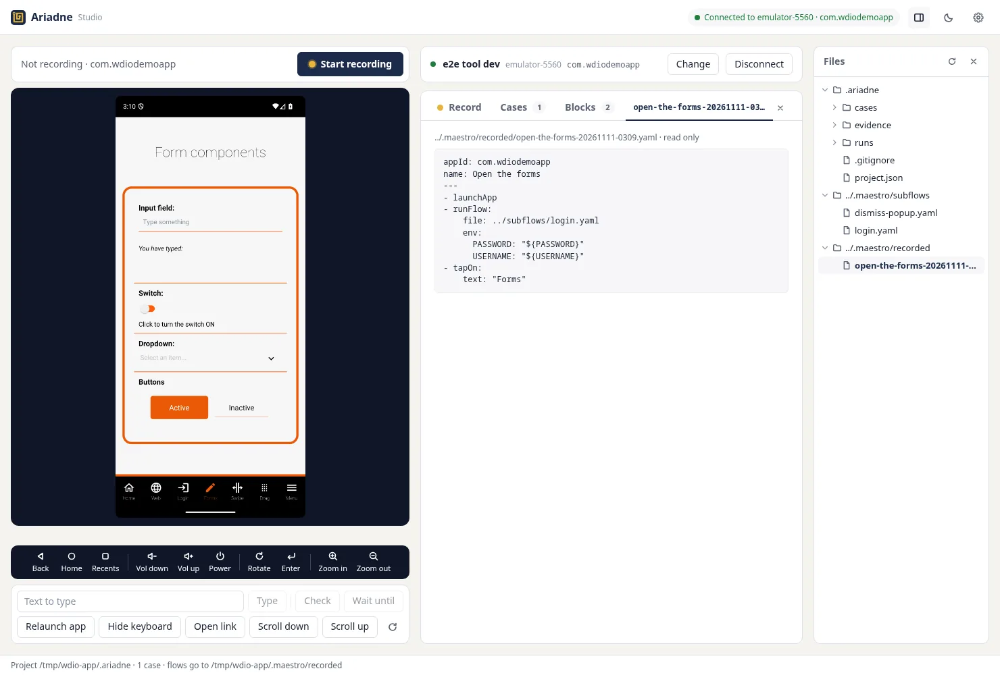
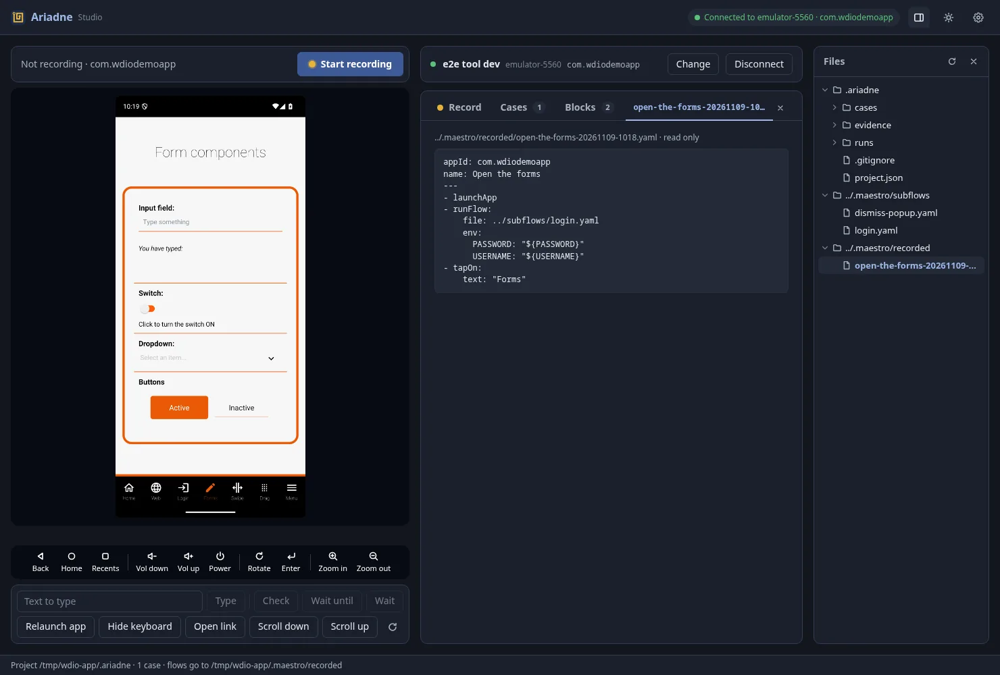

Selectors picked for you
Each step uses the element's resource id or visible text, escaped the way Maestro expects. Coordinates are the last resort, and the studio flags them.
Click through your Android app on a mirrored screen and Ariadne writes the Maestro flow as you go. Everything runs on your own computer.
npx ariadne-studio
Wednesday 25 November
Event saved
9:41
Wednesday 25 November
Your turn. Click anything on the phone.
com.example.agenda
Create an event
id: com.example.agenda:id/fab_new_eventid: com.example.agenda:id/event_locationid: com.example.agenda:id/saveid: com.example.agenda:id/event_item_titleSaved "Create an event"
Last run passed
appId: com.example.agenda
name: Create an event
---
- launchApp
- tapOn:
id: "com\\.example\\.agenda:id/fab_new_event"
- inputText: "Dentist"
- tapOn:
id: "com\\.example\\.agenda:id/event_location"
- inputText: "Athens"
- tapOn:
id: "com\\.example\\.agenda:id/save"
- assertVisible:
id: "com\\.example\\.agenda:id/event_item_title"
Connect an emulator or a USB phone and use your app as usual. Ariadne turns your clicks into Maestro YAML, one step at a time, each with a selector and a screenshot. A business analyst can record a test without writing code, and the flow runs with maestro test on a laptop or in CI.
Each step uses the element's resource id or visible text, escaped the way Maestro expects. Coordinates are the last resort, and the studio flags them.
Tap, type, swipe, long press and double tap, plus Back, Home, Volume, Power and Rotate. To change a case later, re-record from any step or add steps in the middle.
Turn on Check and click what should be on screen. When you finish recording, tick the end results you expect.
The Maestro CLI runs your cases. Ariadne shows the result of each step beside the phone screen, with Maestro's message when a step fails.
Create an event
com.example.agenda on emulator-5554
Passed in 14.2 s
Ariadne, a recorder for Maestro
Ariadne takes a screenshot after every step and puts it next to the one you recorded. A screen that changed is marked "looks different", even when the run passed.
Run all retries a failed case once. If it passes the second time, it is marked flaky.
A run report is a single HTML file with its pictures inside. Test case documents export to Excel, HTML or Markdown.
Turn them on in Settings. Videos are made on your computer and are not uploaded.
A setup block is a Maestro flow that gets the app ready, such as logging in. Make it once in the Blocks tab, by using the app or filling in a form, and anyone can drag it into a recording. Test users stay in .env, out of the case files.
$ npx ariadne-studio init Found a Maestro workspace in .maestro (6 flow files, most of them for com.example.agenda). created .ariadne/ created .ariadne/project.json created .ariadne/cases/ created .ariadne/.gitignore created .maestro/recorded/ appId: com.example.agenda flows: ../.maestro/recorded (recorded cases are written here) blocks: ../.maestro/subflows Next: ariadne-studio
Run npx ariadne-studio init in your repository. Your subflows become setup blocks and recorded cases land in .maestro/recorded as plain flows. Add recorded/* to flows: in config.yaml and workspace runs include them.
One case, Create an event, recorded and run on an Android emulator.





maestro record?No. maestro record makes a video of a flow you already have. Ariadne writes the flow from your clicks. It can also save a video of each run, with the steps beside the phone, made on your own computer.
Maestro is a mobile UI testing framework by mobile.dev. Tests are YAML flows that the Maestro CLI runs on Android and iOS devices and emulators. See docs.maestro.dev.
No. Ariadne records Maestro flows and passes them to the Maestro CLI to run. It adds the recorder, the results view and the document export.
Maestro Studio is mobile.dev's own tool for developers working on flows. Ariadne is for people who know the product but do not write YAML. It records a whole case as you use the app, keeps a screenshot and run history for every step, lets one case start where another ends, and exports test case documents. Both produce flows the Maestro CLI can run.
For recording tests without writing them, yes. As with Waldo, you record a test by using the app. Ariadne runs on your own computer, against an emulator or a USB phone, and keeps each test as a plain Maestro flow in your repository. See how the tools compare.
No. You record, check, run and export in the studio. You make setup blocks there too, by using the app or filling in a form, and the studio writes the YAML.
No. It runs on your own computer against an emulator or a USB phone. Ariadne has no account and no service of its own, and nothing it records is uploaded. The Maestro CLI has its own analytics setting; see Privacy in the docs.
Not today. Ariadne records on Android emulators and USB phones.
In a folder you choose. flows/ holds the Maestro YAML, cases/ the recorded steps, evidence/ their screenshots, runs/ the results of every run and exports/ the documents. The Files sidebar in the studio shows all of it.
Yes, they are plain files, but a case's flow is rewritten from its recorded steps on the next save or run. Edit recorded cases in the studio, and keep hand-written flows in blocks/.
.maestro folder?Yes. npx ariadne-studio init adds Ariadne beside it, your subflows become setup blocks, and recorded flows land in .maestro/recorded. Add recorded/* to flows: in config.yaml and workspace runs include them.
The desktop app and the command line use the same project folders, so people on a team can pick either.
For Windows and Linux. Download it from the latest release and start it.
Not code signed, so Windows warns on first start. The Windows app has not been tried with a phone yet. There is no macOS build yet.
On Linux, with Node 22.12 or newer:
npx ariadne-studio
It opens the studio in your browser.
adbDevice setup in the studio checks adb, Java and Maestro, and walks you through what is missing. Run videos also need ffmpeg to show the steps. Without it they show only the phone.